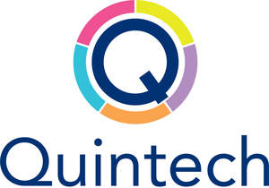

Trade Mark Journal No.2025/009 28 February 2025
UK00004156882 6 February 2025 (9,42)
Mark 1

Mark 2
- Class 9
- Business Computer Hardware and Software; network servers; desktop computers; laptops; mobile computer devices; computer network security devices; IT Switches; firewalls; network server software; desktop and laptop software; network security software; Computers and computer hardware; Computer software; Computer software for accessing computer networks; Computer hardware; Hardware (Computer -); Computer printer; Computer software for use in computer access control; Computer peripherals; Computer software for the monitoring of computer systems; Computer software for testing vulnerability in computers and computer networks; Computer keyboards; Computer systems; Computer monitors; Computer printers; Computer software for use in computer network access control; Computer screens; Computer mouse; Computer mouses; Computer servers; Computer antivirus software; Computer programs for searching remotely for content on computers and computer networks; Computer firewall software; Computer networks; Computer software for the detection of threats to computer networks; Computer utility programs for computer maintenance; Computer operating software; Laptop computers; Monitors [computer hardware]; Computer touchscreens; Computer network hardware; Computer firmware; Computer software for encryption; Computer apparatus; Computer cabling; Computer programs for searching the contents of computers and computer networks by remote control; Computer hardware for telecommunications; Wireless computer peripherals; Computer memory hardware; Computer telephony software; Computer cables; Computer software to maintain and operate computer system; Computer networking hardware; Network routers; Network servers; Network cabling; Network hubs; Network cables; Computer network routers; LAN [local area network] access points for connecting network computer users; Network communication devices; Computer network server; Computer network switches; Network communication equipment; Adapters for wireless network access; Wireless local area network devices; Network communication apparatus; Network access server hardware; Network management apparatus; LAN [local operating network] hardware; Computer programs for network management; Computer software for wireless network communications; LAN [local area network] operating software; Network operating system programs; Software for network and device security; Wide area network (WAN) routers; VPN [virtual private network] hardware; WAN [wide area network] operating software; WAN [wide area network] hardware; Computer software for communication between computers over a local network; Local area networks; Software for accessing information on a global computer network; System support software; System and system support software, and firmware; Hardware testing software; Mounting racks for computer hardware; Security software; Communications servers [computer hardware]; VPN [virtual private network] operating software; Software for ensuring the security of electronic mail; Security tokens [encryption devices]; Cloud computing software; Computer software for the creation of firewalls; Computer networking and data communications equipment; Handheld computing devices; Mobile device management software; Software and applications for mobile devices; Computer peripheral devices; Peripheral devices (Computer -); Wireless communication devices.
- Class 42
- Installation of computer software; Computer software installation; Computer network services; Computer network configuration services; Monitoring of network systems; Telecommunication network security consultancy; Configuration of computer systems and networks; Integration of computer systems and networks; IT services; IT services for data protection; Information technology [IT] consulting services; IT consultancy, advisory and information services; Information technology [IT] support services [troubleshooting of software]; IT service management [ITSM]; Information technology [IT] consultancy; IT project management; Information technology services provided on an outsourcing basis; Software maintenance services; Information technology support services; Provision of technical support in the supervision of computing networks; Provision of technical support in the operation of computing networks; Providing on-line support services for computer program users; Computer software technical support services; Provision of on-line support services for computer program users; Support and maintenance services for computer software; Technical support services relating to computer software and applications; Maintenance and repair of software; Troubleshooting of computer hardware and software problems; Providing technical advice relating to computer hardware and software; Computer security consultancy; Consultancy in the field of computer security; Maintenance of computer software relating to computer security and prevention of computer risks; Professional consultancy relating to computer security; Data security services [firewalls]; Computer security services for protection against illegal network access; Computer programming services for electronic data security; Computer virus protection services; Protection services (Computer virus -); Computer technology consultancy; Provision of security services for computer networks, computer access and computerised transactions; Data security consultancy; Consultancy in the field of data security; Computer firewall services; Consulting in the field of cloud computing networks and applications; Provision of computer security risk management programs; Computer consultancy; Computer hardware (Consultancy in the field of -); Consultancy in the field of computer hardware; Computing consultancy; Expert consultancy services in connection with computing networks; Cloud computing services; Information technology consultancy; Technological consultancy; Computer and software consultancy services; Computer software consultancy services.
Quintech Computer Systems Limited